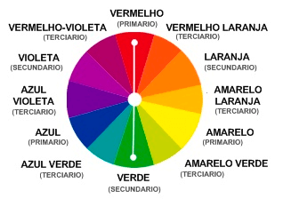
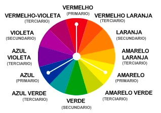
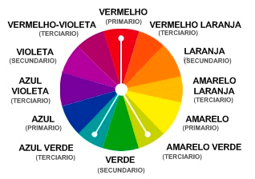
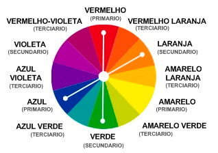

Cores harmoniosas são aquelas que funcionam bem em conjunto ou justapostas, produzindo um esquema de cores atraente. O círculo cromático ou círculo de cores pode ser utilizado de forma a ajudar na escolha das cores e combinações harmônicas.
Cores Quentes: são as cores que se associam às sensações de calor, adrenalina, são cores consideradas mais excitantes. São consideradas cores quentes todas aquelas que, no círculo cromático primário, derivam das cores amarelo e vermelho.
Cores Frias:como o próprio nome, são as cores associadas à sensação de frio ou calmante. São, essencialmente, as cores que derivam do violeta, azul e verde.
É a harmonia que ocorre quando combinamos cores opostas na roda das cores. Em outras palavras, são cores que se encontram simétricas com respeito ao centro da roda.
E importante quando utilizar esta harmonia, escolher uma cor dominante, e utilizar a complementar para acentos e toques de destaque. Como por exemplo, utilizar uma cor para fundo e a outra para destacar os elementos de importância.
É a harmonia formada de uma cor primária combinada com duas cores vizinhas na roda das cores. Uma cor é utilizada como a dominante enquanto que as adjacentes são utilizadas para enriquecer a harmonia.
É a harmonia onde usamos três cores equidistantes no circulo cromático. Por exemplo: azul, amarelo e vermelho. Esse tipo de combinação consegue dar um efeito visual muito atraente.
É a harmonia onde usamos três cores equidistantes no circulo cromático. Por exemplo: azul, amarelo e vermelho. Esse tipo de combinação consegue dar um efeito visual muito atraente.
Refere-se a harmonia conseguida por dois pares de cores complementares entre si. Estas combinações são as mais ricas de todas as harmonias, porque utiliza quatro cores sendo elas complementares em pares.
É, no entanto, uma harmonia muito difícil de trabalhar. Se as quatro cores são utilizadas em iguais proporções, a harmonia parecerá desequilibrada, pelo qual deverá sempre ser escolhida uma cor como a dominante e com esta dominar as restantes.
O esquema ou harmonia monocromática utiliza variações de luminosidade e saturação de uma mesma cor. Estas harmonias luzem simples e elegantes, de fácil percepção ao observador especialmente quando se trata de tons azuis e verdes.
A cor principal pode ser combinada com cores neutras, preto e branco, no entanto pode ser difícil quando se utiliza esta harmonia, ressaltar os elementos mais importantes.